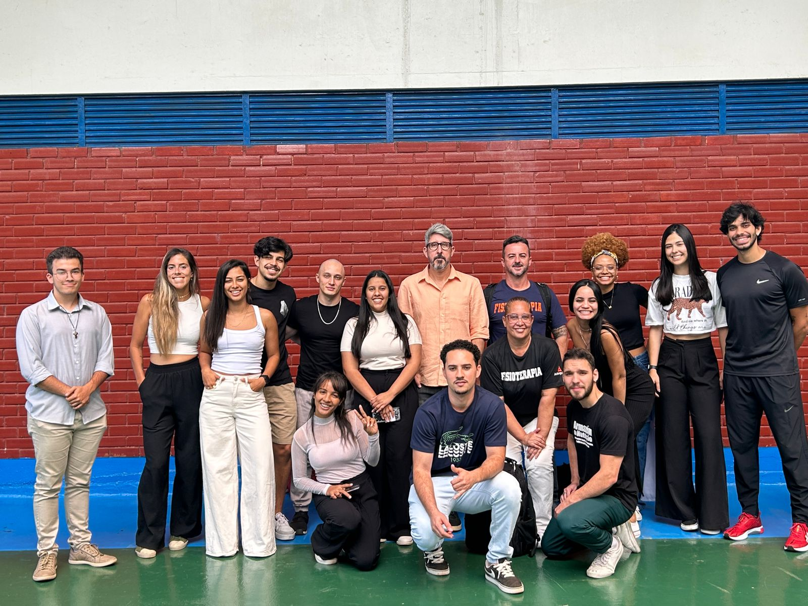
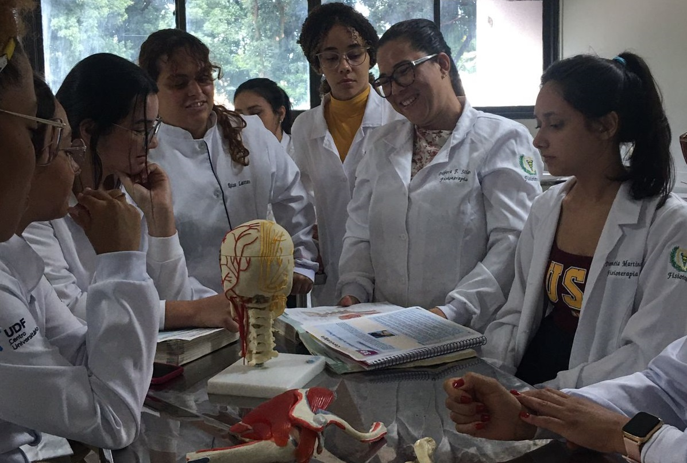

Liga Acadêmica de Anatomia, Cinesioterapia e Fisiologia.
Missão
Aprofundar os conhecimentos sobre anatomia, cinesioterapia e fisiologia;
Promover atividades práticas e teóricas, visando o desenvolvimento acadêmico do ligante;
Desenvolver pesquisas e projetos de extensão;
Conhecer sobre práticas baseadas em evidência científica na fisioterapia.
Foco das Atividades
- Nossas atividades são fundamentadas nas matérias base da Fisioterapia.
Diretoria
A LACIFI conta com um total de 19 membros, dos quais 10 são diretores e 10 atuam como ligantes.
São membros da diretoria:
• Alice Éllen- Presidente;
• Daniela Andrade- Vice-presidente;
• Mário Vinicius - Diretor de Eventos;
• Zaine Marques - Diretora de Eventos;
• Mariana Eduarda Souza - Marketing;
• Mariana Eduarda Palma - Marketing;
• Vinicius de Andrade - Diretor de Pesquisa;
• Lucas Maia -Diretor de Eventos;
• José Augusto- Diretor Financeiro;
• Karine Júlia - Secretária;
• Rosana de Assis Borges- Diretora de Pesquisa;
• Silmária do Nascimento Lima da Silva- Vice Presidente.
Criação
A liga foi criada no 2° semestre de 2023, com início das atividades no 1° período de 2024. Nosso objetivo é buscar conhecimento, com auxílio de especialistas, disseminando informações sobre as bases da Fisioterapia (Anatomia, Fisiologia e Cinesioterapia) e buscando sempre as melhores evidências científicas.
Contato
Fique a vontade para enviar uma mensagem no e-mail ou telefone oficiais da LACIFI.
E-mail: lacifiudf@gmail.com
Telefone: +55 (89) 98140-8332
Atividades Realizadas:
Visita Técnica ao Laboratório NeuroVASQ da UNB.
Descrição: Fomos convidados para conhecer o Laboratório comandado pelo Professor Lauro Vianna, que tem como objeto de estudo os mecanismos integrativos de controle cardiovascular. Com um estudo inédito em humanos, os cientistas do NeuroVASQ descobriram um neurotransmissor responsável pela comunicação entre músculo e cérebro durante a ativação cardiovascular. Nesse encontro, os ligantes foram imersos em um dia de pesquisador, observando os equipamentos e cada função desempenhada ali no espaço. Na oportunidade foram apresentados os próximos passos da pesquisa, as conquistas dos cientistas, esclarecimentos de dúvidas e uma amostra prática de como são feitos os experimentos em humanos.
Revisões de Anatomia e Aulas de Anatomia Palpatória.
Descrição: Trazendo familiaridade com a Anatomia corporal, realizamos diversas revisões, atividades em grupo, quiz e vários jogos que facilitam o aprendizado.
